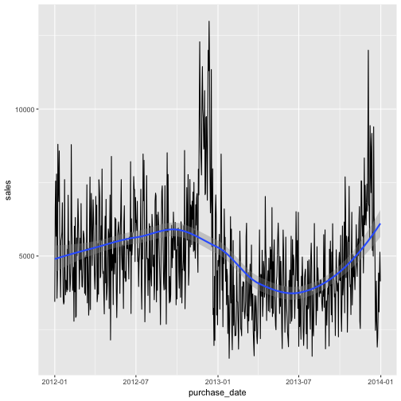
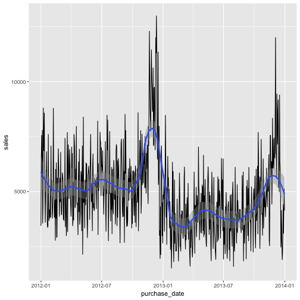
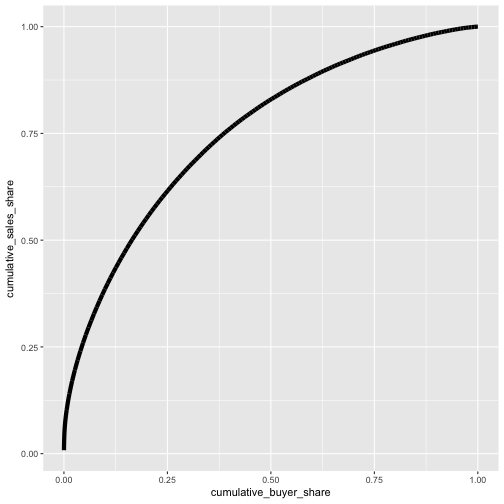

Homework 2
SAME AS PRACTICE EXERCISES OF THE LAST CLASS
TASK 6 IS UPDATED - THANKS TO ISTVAN FOR THE NOTICE
Due 7 October 24:00. Send the hw2_<your-last-name> file to divenyi.janos@phd.ceu.edu.
Task 0
Download the purchases.csv from the data section. Load it into R.
## Warning in file(file, "rt"): cannot open file '/home/divenyijanos/Dropbox/
## teaching/Programming_Tools/Fall2015/Data/purchases.csv': No such file or
## directory
## Error in file(file, "rt"): cannot open the connection
Task 1
Give the mean and the median of the individual purchases.
## # A tibble: 1 x 2
## `mean(sales)` `median(sales)`
## <dbl> <dbl>
## 1 92.42237 55.9
Task 2
Tell R that your purchase_date variable is a date. You can do this by applying
the as.Date() function to the original variable (similar to how we can use
as.character()). Then you can get the median day of the purchases.
## # A tibble: 1 x 1
## `median(purchase_date)`
## <date>
## 1 2012-11-22
Task 3
List the 5 biggest buyer along with their aggregate purchases.
## # A tibble: 5 x 2
## contact_id sales
## <int> <dbl>
## 1 35244243 29906.27
## 2 49141897 19803.57
## 3 46092347 16821.38
## 4 35117040 13026.16
## 5 14316018 12458.95
Task 4
Plot the distributions of log sales amounts for the two years separately. For this you should have the year variable as factor.

Task 5
List the number of buyers in each month by year. (Hint: you might need tidyr
for accomplishing this).
## # A tibble: 12 x 3
## month `2012` `2013`
## * <int> <int> <int>
## 1 1 2079 1559
## 2 2 1651 1041
## 3 3 1714 1273
## 4 4 1648 1300
## 5 5 1917 1309
## 6 6 1873 1342
## 7 7 1736 1235
## 8 8 1738 1247
## 9 9 1640 1162
## 10 10 1781 1323
## 11 11 2497 1624
## 12 12 2415 1831
Task 6
What share of total sales in 2013 comes from the top 5 buyers in 2013? You may
want to aggregate sales by contact first and then to use the cumsum() function
to calculate cumulative sums.
Hint: this table is an intermediate state you may want to achive.
The correct answer you should get is (from the previous table)
## # A tibble: 1 x 1
## top5_share
## <dbl>
## 1 0.02366103
Task 7
Plot the aggregate daily sales (you should combine dplyr and ggplot statements).
Note that you should have purchase_date as date instead of factor or character.
Add a smoothed line to the plot (you can experiment with the span option of
geom_smooth() to control the smoothness of your line).
Default:
## `geom_smooth()` using method = 'loess' and formula 'y ~ x'

With span = 0.2:
## `geom_smooth()` using method = 'loess' and formula 'y ~ x'

Task 8
Which month brings the most sales? Plot a bar graph with aggregate sales per
month. Look at the documentation of geom_bar() to solve this. Note the labels
of the x axis (the documentation helps to reproduce).

Task 9
Recreate the previous graph by drawing the columns separately for the years (map the year variable to column and see the examples in the documentation to achieve side-by-side bars).

Task 10
Plot a graph which gives you that to what share of all sales are the top x% of
buyers responsible. So a point at x = 0.5, y = 0.8 would tell 80% of all sales
come from the top 50% of buyers. (Hint: use your intermediate dataframe from
task 6.)
middle %>%
mutate(
id = 1,
cumulative_sales_share = cumulative_sales/all_sales,
cumulative_buyer_share = cumsum(id)/n()
) %>%
ggplot(aes(x=cumulative_buyer_share, y=cumulative_sales_share)) +
geom_line(size=2)
